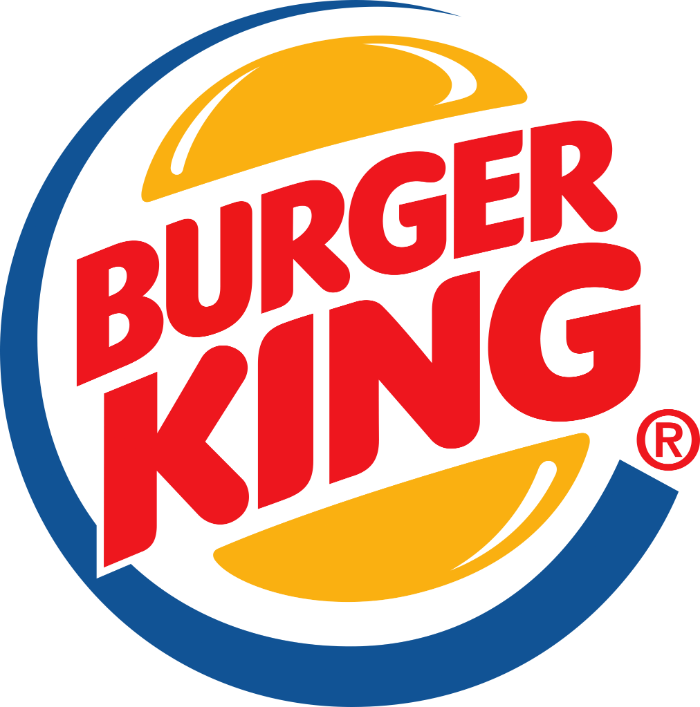

Otras cosas sobre nosotros...
Somos los principales proveedores de comida para McDonald's, Burger King, y otras marcas que solíamos apoyar. Sin embargo, decidimos que era hora de crear nuestro propio estilo y sabores únicos. Durante años, hemos trabajado estrechamente con estas grandes cadenas, ganando valiosa experiencia y conocimiento en la industria alimentaria. Este recorrido nos permitió perfeccionar nuestras técnicas y comprender mejor las preferencias de los consumidores. Sin embargo, nuestro deseo de innovación y autenticidad nos llevó a emprender un nuevo camino, donde pudiéramos expresar nuestra creatividad culinaria y ofrecer algo verdaderamente diferente. Nos propusimos desarrollar un menú que reflejara nuestra pasión por la comida de calidad, utilizando ingredientes frescos y recetas cuidadosamente elaboradas. Cada plato en nuestra oferta es una combinación de sabores distintivos y presentaciones atractivas, diseñadas para proporcionar una experiencia gastronómica memorable. Nuestra decisión de independizarnos y establecer nuestra propia marca nos ha permitido explorar nuevas ideas y sabores, sin las limitaciones que a menudo imponen las grandes cadenas. Esto nos ha dado la libertad de innovar y adaptarnos rápidamente a las tendencias y deseos de nuestros clientes. Hoy, estamos orgullosos de ofrecer una variedad de comidas que no solo satisfacen el paladar, sino que también cuentan una historia de dedicación y pasión por la buena cocina. Ven y descubre cómo hemos transformado nuestra experiencia en una aventura culinaria que redefine lo que significa disfrutar de una buena comida. Además, hemos hecho de la sostenibilidad y la responsabilidad social una parte integral de nuestra misión. Sabemos que los consumidores de hoy valoran no solo el sabor, sino también el impacto ambiental y social de sus elecciones alimentarias. Por ello, nos comprometemos a utilizar prácticas agrícolas sostenibles, apoyar a los productores locales y reducir nuestro desperdicio de alimentos. Este compromiso nos permite ofrecer comidas que son buenas para ti y para el planeta. Cada uno de nuestros restaurantes es un reflejo de nuestra visión de un futuro más saludable y sostenible. Hemos diseñado espacios acogedores y modernos donde puedes relajarte y disfrutar de una comida deliciosa en un ambiente que celebra la autenticidad y la innovación. Nuestro equipo, apasionado por la gastronomía, está siempre dispuesto a compartir su conocimiento y recomendarte platos que sorprenderán y deleitarán tus sentidos. Queremos que cada visita a nuestros locales sea una celebración de sabores y una experiencia que recordarás con una sonrisa. Por eso, estamos constantemente experimentando y refinando nuestras recetas, siempre buscando nuevas formas de sorprender y satisfacer a nuestros clientes. Nos emociona compartir contigo esta nueva etapa de nuestro viaje culinario. Acompáñanos y descubre cómo hemos convertido nuestra pasión por la comida en una experiencia única que celebra lo mejor de la gastronomía contemporánea. Juntos, podemos disfrutar de un futuro lleno de sabores frescos, auténticos y emocionantes. ¡Bienvenido a nuestra mesa!